UI/UX overhaul proposal, for review
The PIKOM events console, redesigned.
Same features and the same workflows, in a calmer, clearer interface. Every screen staff and registrants use, from campaign setup to the check-in scanner, moved onto one blue-and-white design system.
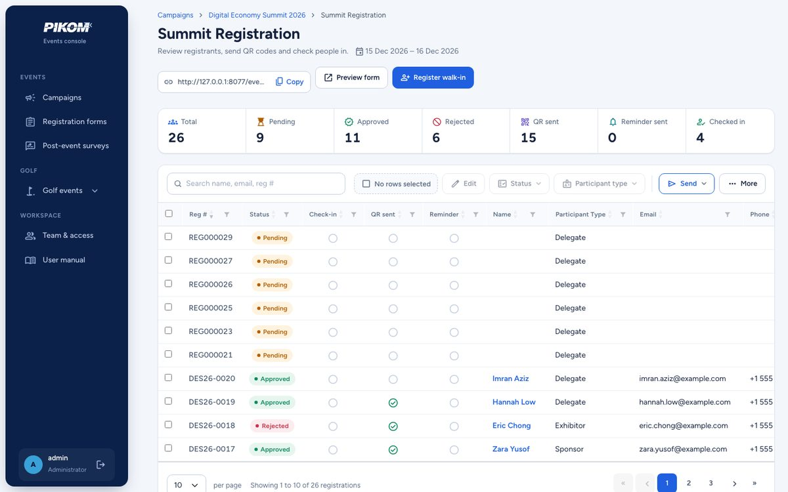
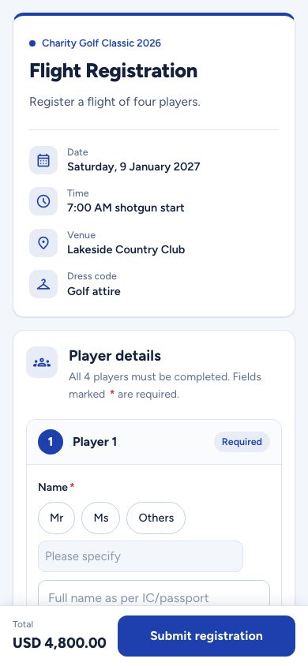
What we found
A capable tool that looked like three different products.
The console does a lot: campaigns, form building, approvals, QR emails, walk-ins, badges, golf flights and sponsorship. The interface had grown screen by screen, so every page solved layout differently.
- paletteNo consistent colour
Purple sign-in, light-blue gradients in the menu, green, grey and violet buttons side by side. Colour carried no meaning.
- scatter_plotKey numbers were hard to read
Totals, pending, approved, QR sent and check-ins floated in the corner as small icon-and-number pairs.
- sentiment_neutralEmoji and mixed icon sets
Public pages used emoji for date and venue; admin pages mixed three icon families.
- smartphoneWeak on phones
Toolbars and tables spilled sideways, and the scanner page gave no clear signal at the door.
- visibility_offSmall things that cost time
An invisible close button on dialogs, form fields drawn as a single faint line, ALL-CAPS labels and title-case buttons.
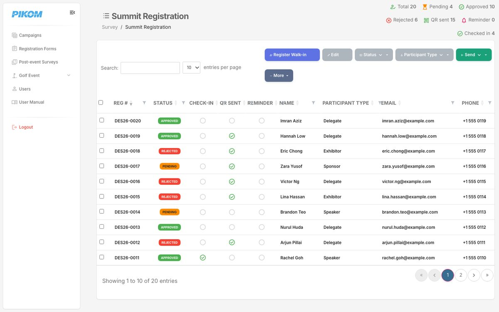
The registrations page before the overhaul.
Concept
Command rail, white canvas.
A deep navy rail holds everything you can go to. The page itself stays white and quiet, so the registrants, numbers and decisions are what you see. PIKOM blue marks the one action that matters on each screen; the sky blue from the PIKOM logo marks where you are.
Colour means something
Blue is for action. Green, amber and red only ever mean approved, pending and rejected. Golf screens carry one small fairway-green mark, nothing more.
Every page reads the same way
Breadcrumb, title, one line on what the page is for, the main action on the right. Then a single bar of numbers, then the work.
Built for the event floor too
Phones get a slide-out menu, pinned submit bars and a scanner that answers in one glance: checked in, already in, or do not admit.
Each event keeps its own colour
Public forms and emails still take each campaign's theme colour. The console's own brand never overrides it.
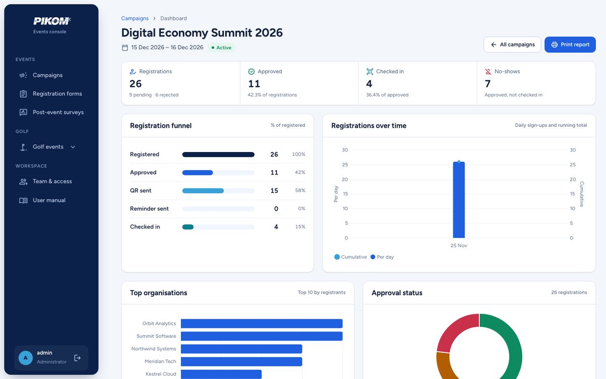
1Navy rail, grouped 2Breadcrumb and title 3One main action 4Numbers in one bar 5Charts in the system paletteReferences
What the best event and SaaS products do well.
We studied premium Framer templates for events and SaaS, and the products people hold up as the standard for calm, dense software. Nothing was copied; each one taught a specific pattern.
Convene
Conference template that leads with event meta (date, time, format) and ends in a registration form.
We took: event details as a scannable panel before the questions on public forms.
Latent27
Conference template whose register page designs the loading, success and error states, not just the empty form.
We took: per-question error messages and a confident thank-you page with the reference number.
Eventr
Event template built around clear ticket cards with a single action each.
We took: golf sponsorship packages as selectable cards with price, state and "sold out".
Alytics
SaaS template that presents analytics and reports as clean product panels.
We took: the campaign dashboard as a report: funnel, timeline and status in calm cards.
Linear
The reference for quiet, dense work software: a dark navigation rail, restrained colour, sentence-case labels.
We took: the navy rail with grouped sections and a single accent for "you are here".
Luma
Event pages that put the banner, date and place first and keep registration short and friendly.
We took: banner-first public forms that keep each event's own colour.
Design system
Blue and white, with colours that earn their place.
One stylesheet now restyles every admin page and the shared parts of the public pages: colours, type, buttons, forms, tables, dialogs, menus, date pickers, editors and alerts.
Colour
#0B2149
#1F5FE0
#3AA0D8
#F3F6FB
#0D8A5F
#B25E00
#C9304A
#1F7A4D
Type: Figtree, one family
28 / 800Summit Registration
17 / 700Respondent details
15 / 400Approved delegates can receive their QR email.
13 / 600Participant type
Navigation rail
Before and after
Every screen, side by side.
Pick a screen, then drag across the image to compare. Switch to phone to see the 390 px version. Screens use made-up demo data.
Moments that matter
The check-in scanner answers in one glance.
At the door, staff hold a phone or a handheld scanner. Each scan now fills the screen with one clear state and a big "Next scan" button.
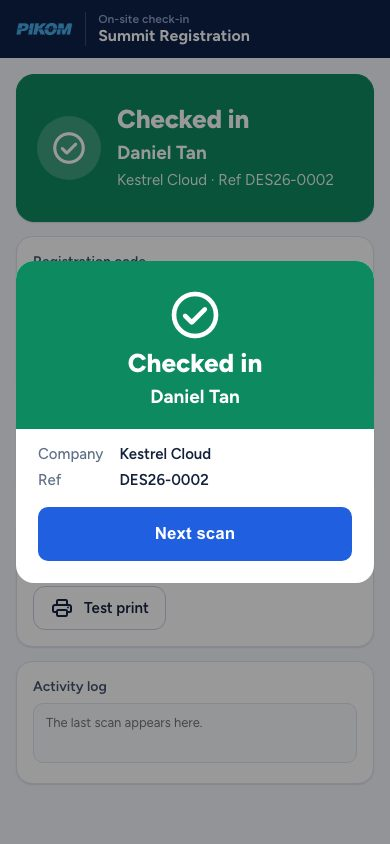
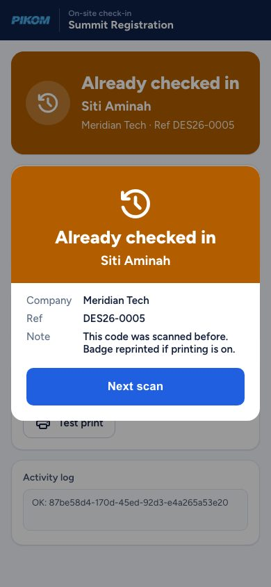
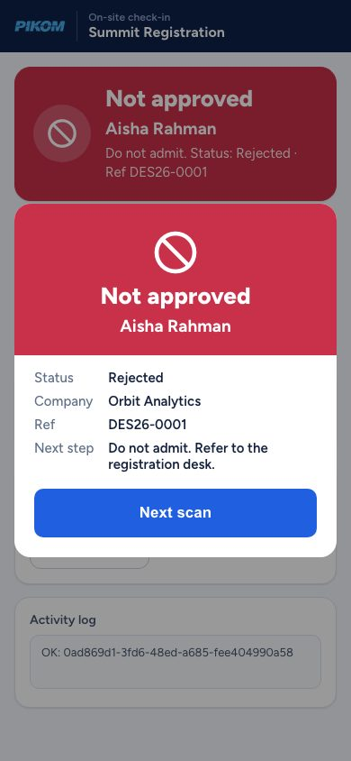
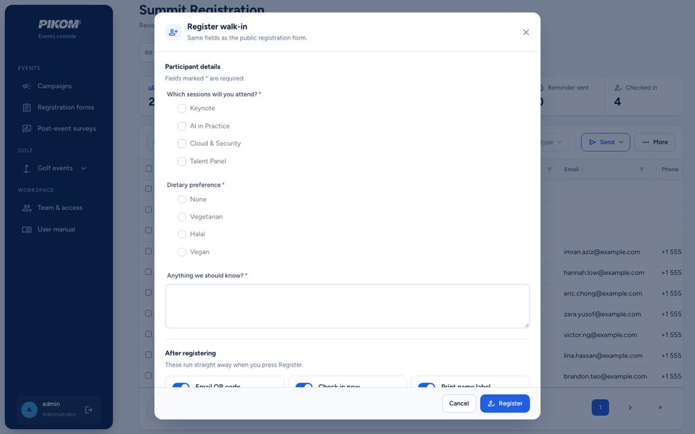
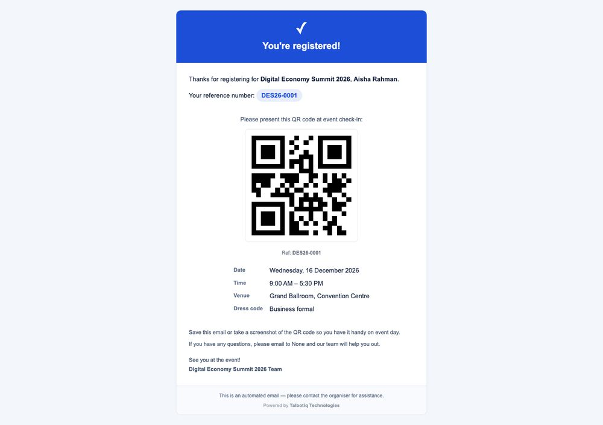
Public pages
Registration that feels like a premium event.
Registrants see each event's colour, a banner hero, event details with proper icons, numbered questions and a submit bar that stays in reach on phones. Golf sponsors choose packages as cards with a live order summary.
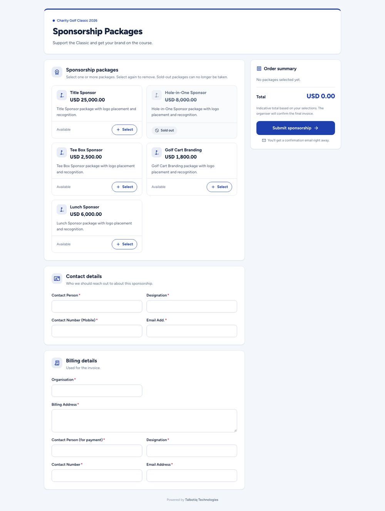
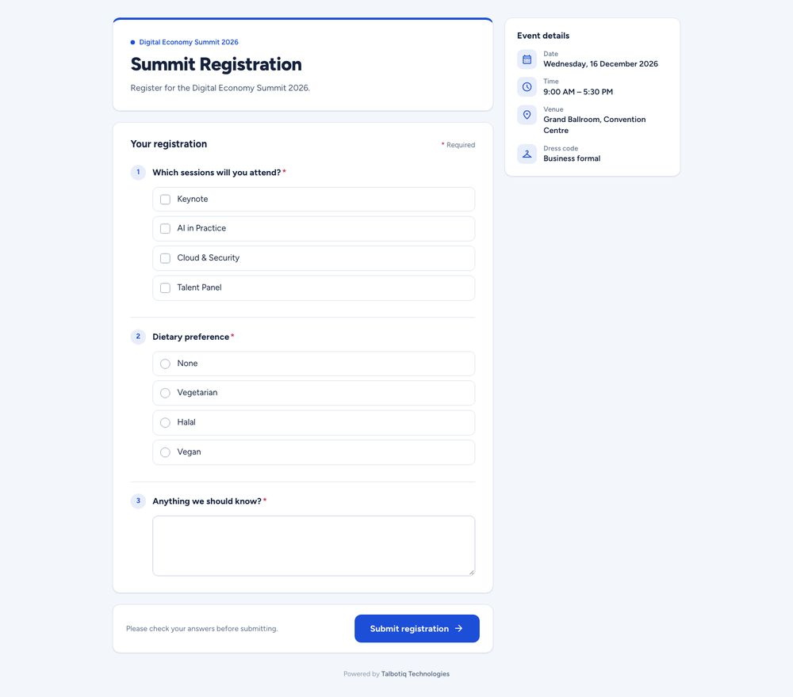
How it was made
An agency process, start to finish.
The same workflow we use for client websites and landing pages, applied to a working product.
- Product truth
Read every model, view and template; mapped who uses each page and every flow.
- Run it for real
Set the app up locally with demo data and captured all 30 screens as they were.
- Research
Studied premium Framer event and SaaS templates and best-in-class products.
- Concept
Command rail, white canvas; colour only where it means something.
- Design system
One stylesheet: tokens, type, components and fixes for every library in use.
- Build in parallel
Five page groups redesigned side by side, every script hook preserved.
- Test
Opened every dialog, submitted every public form, approved, scanned, dragged and reordered at desktop and phone width.
- Review
This page. Nothing is deployed until it is approved.
For the reviewer
What changed, and what to check.
The work sits on a branch called ui-overhaul and has not been committed or deployed. Only templates and one new stylesheet changed.
Unchanged and changed
- check_circleNo server code changed. Views, models, URLs, settings and data are exactly as they were.
- check_circleEvery script hook kept. Element IDs, form field names and data attributes the scripts rely on are intact.
- check_circleCampaign colours kept on public pages and emails.
- helpPlease confirm: camera scanning on the check-in page now works (its code had been switched off).
- helpPlease confirm: sign-in no longer errors when "Keep me signed in" is unticked (handled in the page).
- helpPlease confirm: registrant names are now escaped before display on the scanner, registrations list and golf form.
Server-side notes
- infoWhile reading the code we noted a few server-side issues that are outside a UI change. They are listed in a separate technical note shared privately with the development team, not on this page.
- check_circleNone of them were changed as part of this overhaul, so the review can focus on the interface alone.
To review it locally:
git checkout ui-overhaul python manage.py runserver